加波山/茨城県
筑波連山の一画、加波山は古くから山岳信仰の山である。
ところが近年、不思議な宗教施設が登場し、ステキな事になっちゃっているのだ。
そんな不思議な加波山を麓から徐々に攻めて行こう。
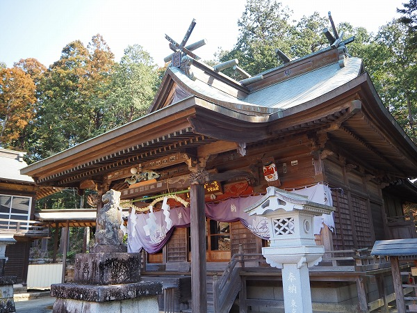
石材加工が盛んな真壁の町を抜けると最初に現れるのが加波山三枝祗神社（加波山神社）本宮。
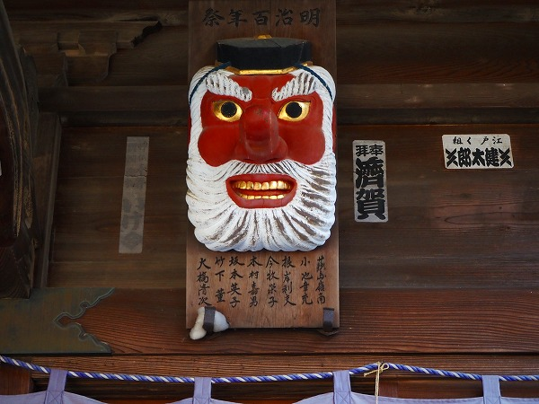
拝殿の両サイドには天狗の面が。
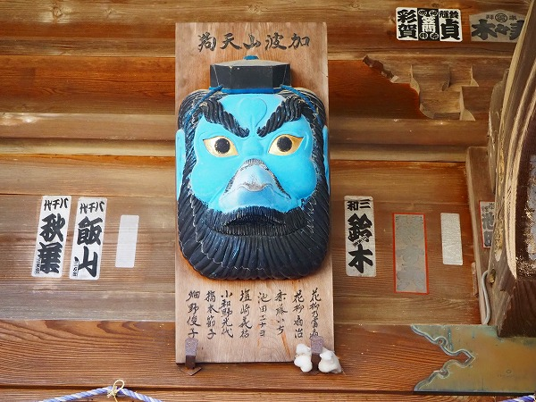
どちらもキュートな天狗だった。
道は徐々に高度を上げ、加波山の一合目付近に神社が現れる。
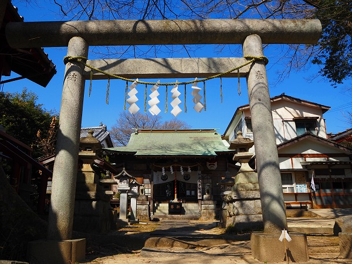
加波山普明神社である。
明治の仙人、国安普明を祀る神社だとか。
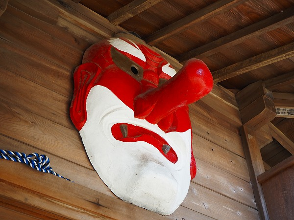
ここもまた天狗の面が掲げられている。
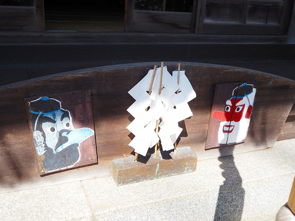
天狗のイラストも、先程の加波山三枝祗神社本宮にあった天狗の面にどこか似ているような気がする。
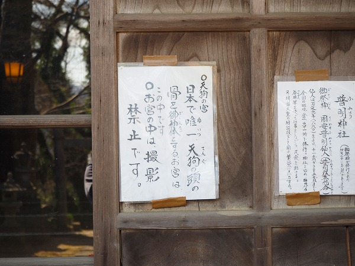
日本で唯一天狗の頭の骨を御神体とすると書かれている。
え、天狗の頭蓋骨があるということ？
加波山普明神社の隣には加波山神社真壁拝殿がある。
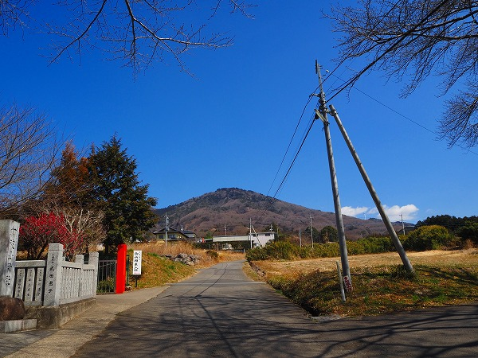
道の先には加波山の山頂が見える。
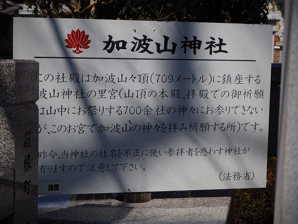
この加波山、加波山三枝祗神社と加波山神社という二つの系列の神社が名称等で対立しているようで、非常にややこしい。
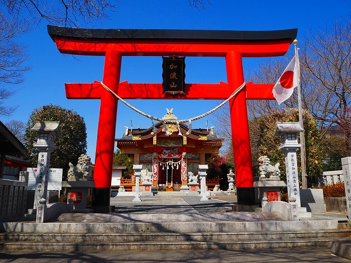
で、加波山神社真壁拝殿はこんな感じ。
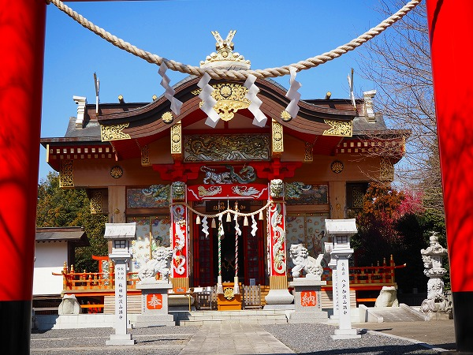
ウルトラど派手な社殿である。
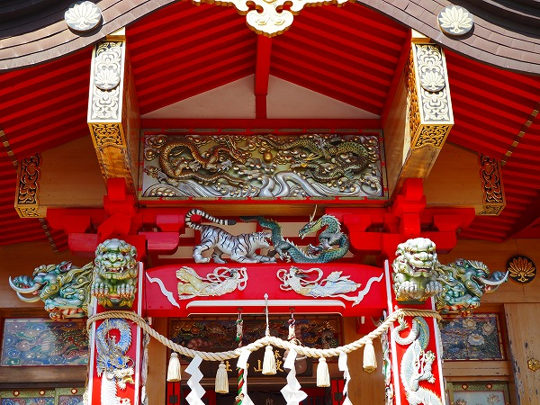
要所要所がメタリックな塗装が施されており、単なる派手な社寺装飾とは一線を画している。
第一印象としては…デコトラ？
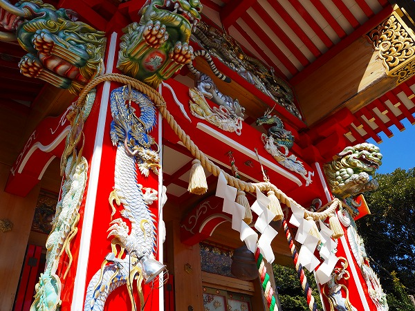
この加波山神社は先程の加波山三枝祗神社に対して「当神社の社名を不正に使い…」とその正当性を主張している。
…そうなんすかー。
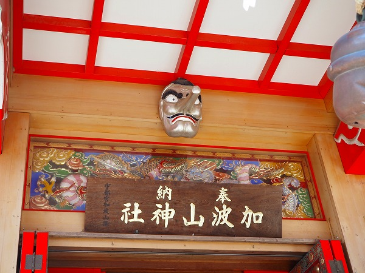
神社の正当性に関しては私には与り知らぬことだが、社殿のファンキー具合に関しては完全にこっちの圧勝ですね。
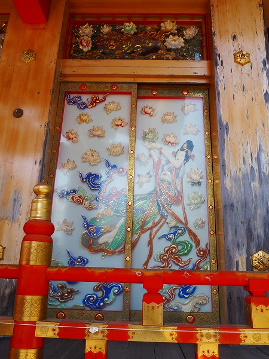
なんでしょう、このプラスチッキーな装飾。
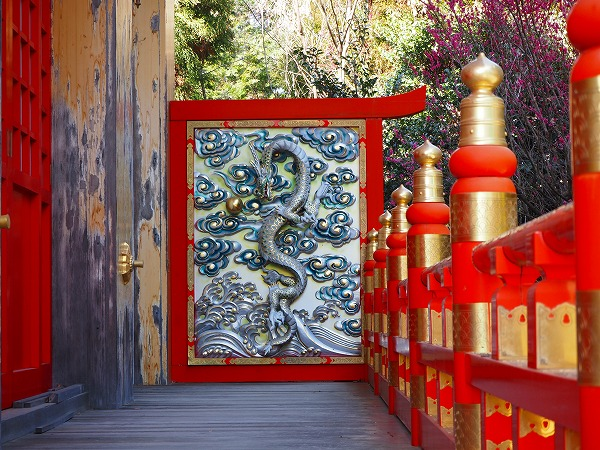
光ものを多様しているのも特徴ですな。
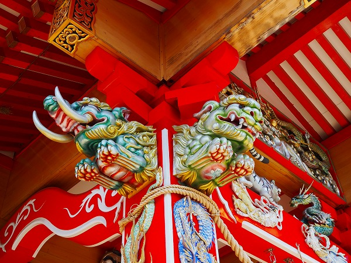
象鼻と獅子。
メタリカな色とエアブラシチックな塗り方が特徴的だ。
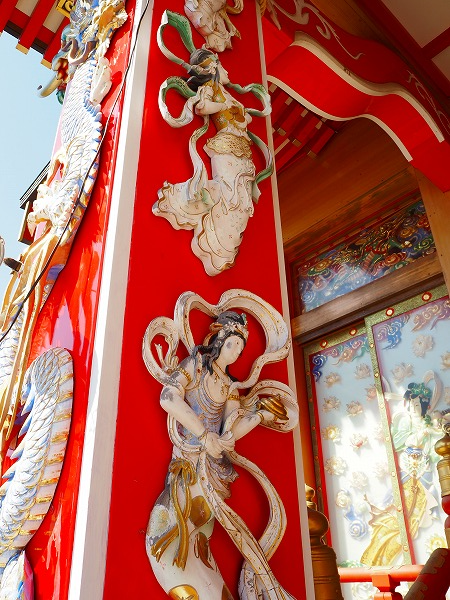
よーく見ると柱から彫刻したのではなく、別に造ったモノを貼り付けてあるみたいですね。
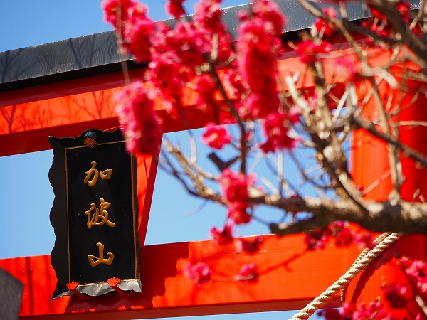
梅の花が満開だった。
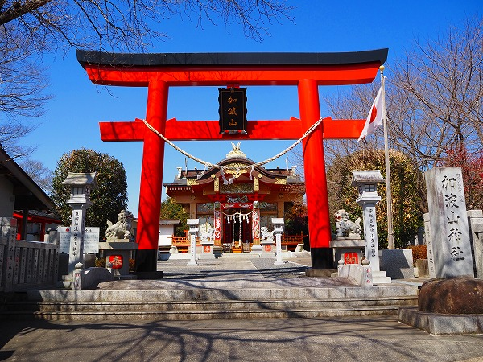
境内に、この神社の由来が刻まれた碑があった。
それによると箱根大天狗神社という教団が大いに関わっているようだ。
石碑にわざわざ刻んでいるので、ここでも記させてもらうが、ここの社殿の建設に〇億円を投じたそうな。
ちなみにこの神社の碑が建てられたのは平成16年。
さらに上ると小さな社殿がある。
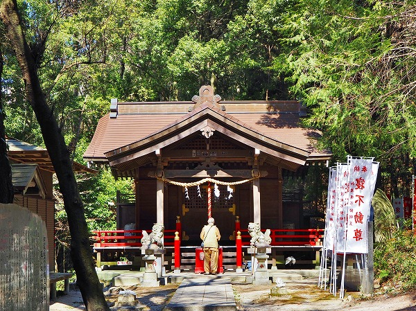
加波根不動明王神社というそうな。
不動明王を祀っている神社、という事だ。
ここにも記念碑があり、火災で消失した社殿を箱根大天狗神社が〇千万円を支出したという。
この箱根大天狗神社が加波山信仰に深く関わっている事が伺える。
そんなこんなで、加波山の5号目あたりまで来たのだろうか。
車道が途切れ、ここから先はダートになり、登山客もここに車を駐車して歩いて登っていくようだ。
近くには採石場があり、時々発破の爆音が鳴り響き、狭い山道をダンプが行きかうような荒くれた雰囲気の場所。
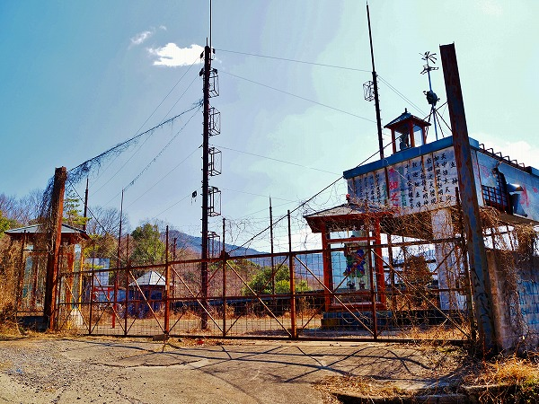
そんな場所にこの不思議な施設がある。
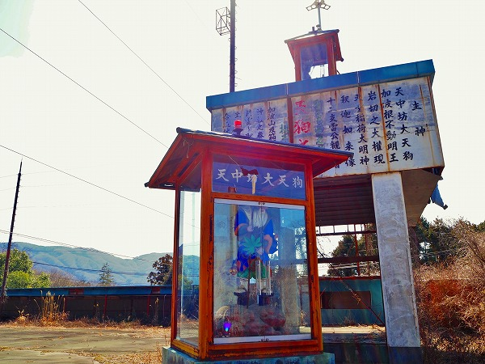
一見、ここも採石関係の施設かと思ったが、天狗だ権現だと書かれているので、山岳信仰の施設なのだろう。
何とも独特な雰囲気の場所だ。
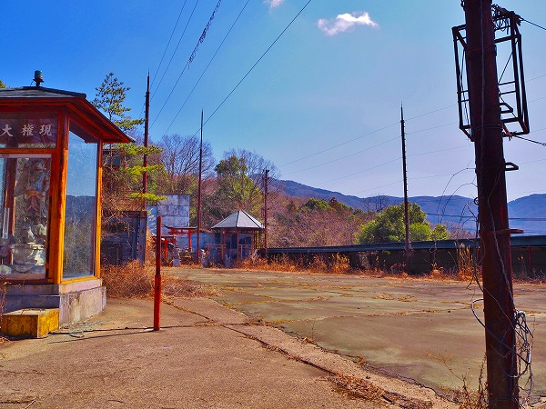
ここには何度か来たことがあるが、残念ながらいつも鍵がかかっており、中に入ることは出来ない。
かといってまるっきりの廃墟か、といわれれば確かにいくらか雑草は伸びているが、ガラスなどは綺麗に掃除されている。
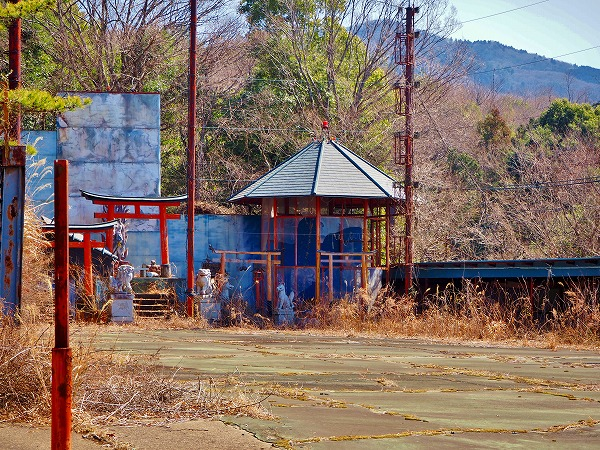
恐らく年に何度か使う施設なのかもしれない。
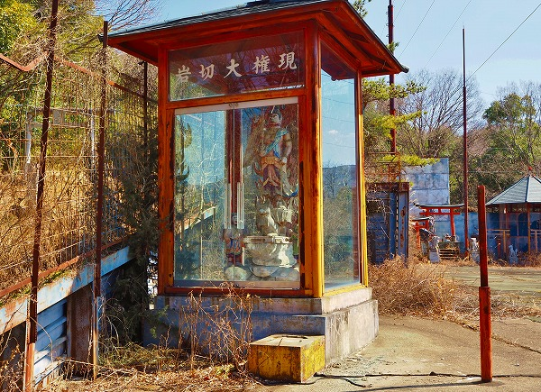
ガラスのショーケースのようなお堂の中には岩切大権現なる羽の生えた天狗のような像が。
逆サイドにも天中坊大天狗の像があった。
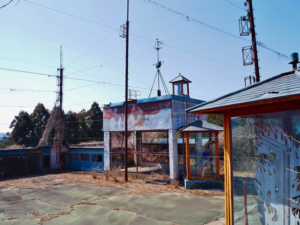
それにしてもこんな山の中になぜこんな大規模な施設があるのだろう？
加波山を信仰する人々が一堂に会する催しがあったりするのだろうか。謎だ。
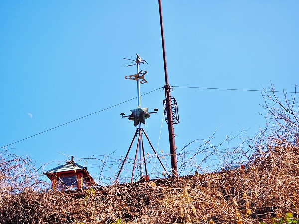
建物の屋上には謎の装置が取り付けられていた。
天狗よりもUFOと交信してそうな感じだった。
2022.03.
珍寺大道場 HOME